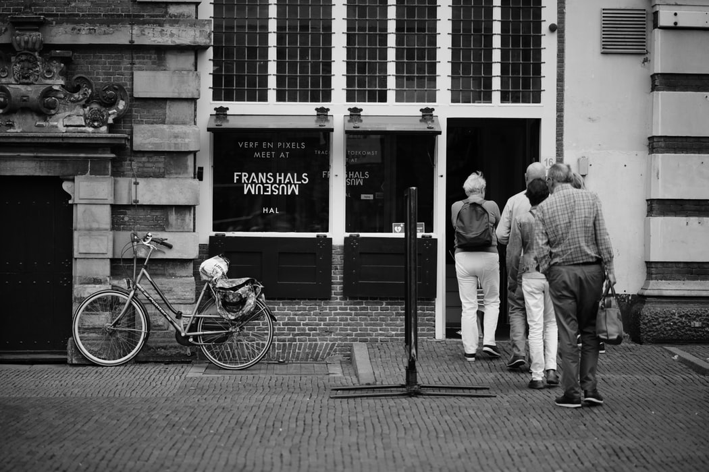

Een dagje uit
Een dagje uit in Haarlem kan ik iedereen aanraden, aangezien er voor ieder wel iets is.
Denk bijvoorbeeld aan het Teylers museum. Dit prachtige museum legt de volledige focus op
de kunstcollectie van de Nederlandse zakenman Pieter Teyler van der Hulst. Teyler zijn aandacht
lag voornamelijk bij de wetenschap en kunst, hierdoor zijn er zeer merkwaardig, maar ook unieke
instrumenten tentoongesteld, waaronder collecties tekeningen van Michelangelo Buonarrotti en Rembrandt van Rijn.
Het paradepaard van het Teylers Museum is de Ovale zaal, deze is dan ook zeker een bezoekje waard.
Het pand behoort tot de top 100 Unesco Monumenten van Nederland.
Aan het Groot Heiligland hofje in het voormalige Oudemannenhuis bestaat er de mogelijkheid een bezoek te
brengen aan het Frans Hals Museum. De 16e-eeuwse schilder, geboren in Antwerpen en vanaf daar door verhuisd
naar Haarlem. Tot zover bekend heeft Frans Hals zijn hele leven gewerkt in Haarlem.
Zijn werk staat bekend om de levendigheid en lichte kleuren die hij in de schuttersstukken verwerkte.


Voor de laatste trends op het gebied van kleding kan je altijd goed terecht in de Oude stad van Haarlem.
Haarlem kent vele kleine winkelstraatjes, maar de vier grootste en belangrijkste zijn de Grote houtstraat,
de Barteljorisstraat, de Warmoesstraat en de Kleine Houtstraat.
Pal in het centrum ligt de Grote Markt, deze markt ligt omringt met mooie façades, goede restaurants en ’s avonds,
als het nachtleven begint op te komen, dan ontpoppen een aantal restaurants zich tot uitgaansgelegenheid.
Café XO en Café Studio zijn hier een goed voorbeeld van. Overdag zijn zij gewoon een restaurant, maar tussen 22:00 en 23:00
worden de tafels aan de kant gezet, wordt het podium opgebouwd, start de Diskjockey de muziek en is het een volwaardig danscafé.
Naast de Cafés kan je natuurlijk ook luxe dineren bij bijvoorbeeld: Restaurant ML, Table 24 of Ratatouille Food&Wine.